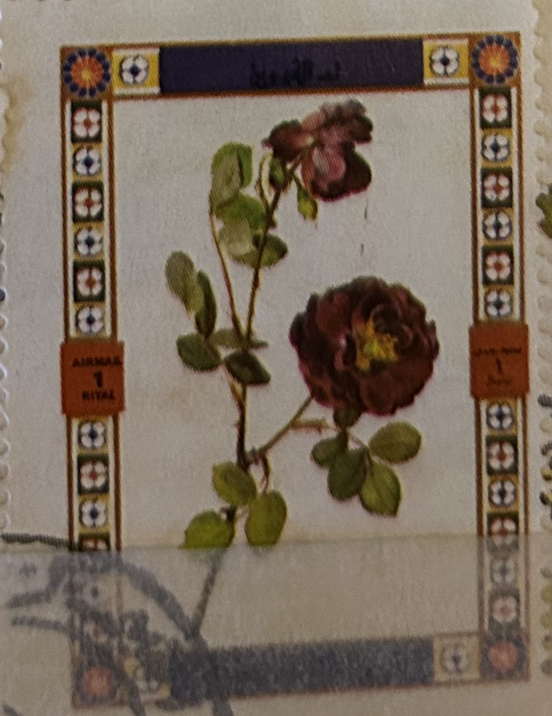
| SOURCE | TITLE| IMAGE MATCH | click to source page |
| 123RF | Umm Al-Quwain - CIRCA 1972: Un Sello Impreso En El Calendario Umm Al-Quwain Shows Rose Variedad, Flores, Alrededor Del Año 1972 Fotos, retratos, imágenes y fotografía de archivo libres de derecho. Image | 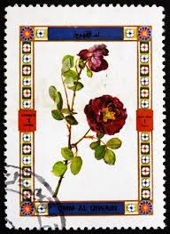 |
| Rose, Purple (Rosa) Enchantment | 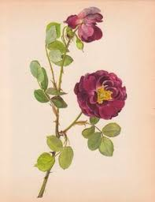 | |
| AbeBooks | Old Garden Roses (Parts I & II). Signed Limited Editions. by Sitwell, Sacheverell & Russell, James (Vol I), Blunt, Wilfrid & Russell, James (Vol II): Very Good Plus Hardback (1955) Limited signed | 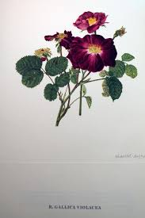 |
| Christie's | PANCRACE BESSA (PARIS 1772-1846 ECOUEN) , Deux fleurs de pavot roses et blanches | Christie's | 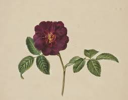 |
| eBay | 1990 Vintage Print Rose Flower Rosa Gallica Maheka Floral Decor Roses | eBay | 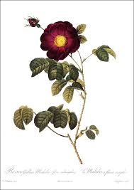 |
| X | O my Luve's like a red, red rose, O That's newly sprung in June; O My Luve's like the melodie O That's sweetly play'd in tune.' 📜Transcript of Add MS 22307 (1788-94), | 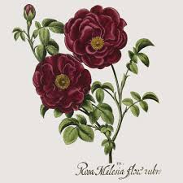 |
| Etsy | Original 1820 Book Plate Tuscany Rose by Sydenham Edwards - Etsy | 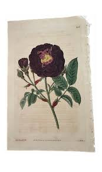 |
| eBay | 1982 Aspelin Galleries Roses French Flower Floral Prints | Vintage Wooden Frames | eBay | 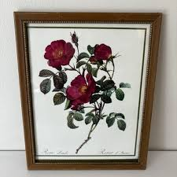 |
| WahooArt.com | Elizabeth Blackwell (1707 - 1758) | 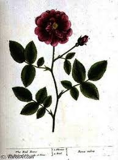 |
| Chairish | Red Roses, "Rosa Ex Rubro": A 17th C. Hand-Colored Botanical Engraving by Basilius Besler Besler, 1613 | Chairish | 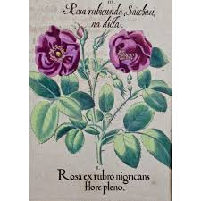 |
| Ellie de Lacy Miniatures | Book Sets | Product Categories | Ellie de Lacy Miniatures | 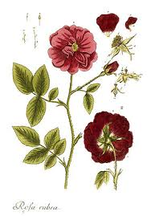 |
| Invaluable.com | Sold at Auction: Blackwell , Herbarium, Red Rose, Rosa rubra, handcol.Engraving, 1750ff. | 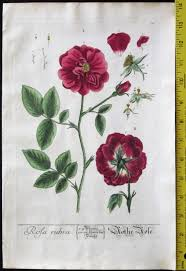 |
| NYBG SHOP | NYBG Herbarium Rose Print – NYBG SHOP | 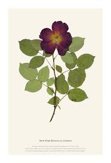 |
| Etsy | Vintage Rose Prints, Set of Floral Prints, Wall Decor, Botanical Flower Prints, Prints for Framing, Botanical Prints, Prints of Flowers - Etsy | 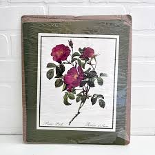 |
| eBay | 4 Prints 1982 Aspelin Galleries Roses French Flowers Floral Rosa Lumila | eBay | 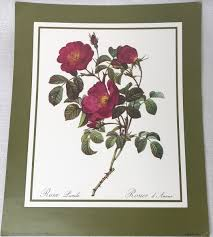 |
| Blogger.com | Barbara Brackman's MATERIAL CULTURE: Flora Delanica #11: Damask Rose | 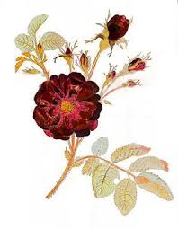 |
| Mercari | 3 framed flower pictures. | Mercari | 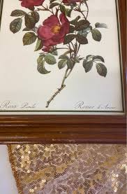 |
| Alamy | UMM AL-QUWAIN - CIRCA 1972: a stamp printed in the Umm al-Quwain shows Rose variety, Flower, circa 1972 Stock Photo - Alamy |  |
| Invaluable.com | Sold at Auction: Pierre Joseph Redouté, Redoute Stipple Engraving Common Alpine Rose, Pl. 111 | 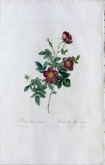 |
| eBay | Botanical Print, Redoute Roses, Gallica Puytrenea. 1978 reproduction print | eBay | 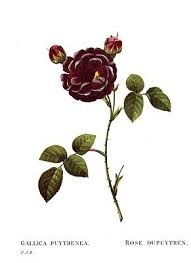 |
| Invaluable.com | Sold at Auction: Pierre (1401) Claude, Redoute - Rose - Rosa Galica Puytrenea | 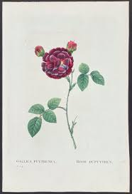 |
| GetArchive | Mary Lawrance - Rosa centifolia - PICRYL - Public Domain Media Search Engine Public Domain Image | 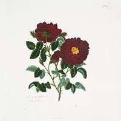 |
| X | 𒄑𒂆𒈦 (@krkpttzlff) / Posts / X | 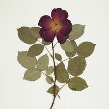 |
| LOT-ART | after Pierre-Joseph Redouté – Rosa Gallica Maheka (Maheka Rose) - offset lithograph in France | 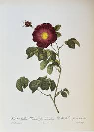 |
| Etsy | Old Red Rose Botanical Illustrations - Etsy | 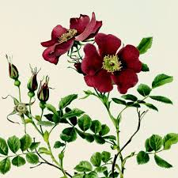 |
| thecentral.co.nz | Works - The Intimates: Part II by Reuben Paterson | The Central | 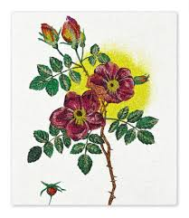 |
| georgeglazer.com | George Glazer Gallery - Antique Botanical Prints - Friedrich Bertuch Roses | 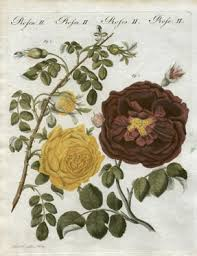 |
| Etsy | Assorted Dried Flowers, Real Pressed Flowers, Preserved Plants for Art Projects - Etsy | 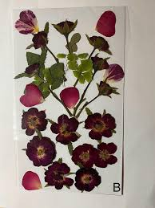 |
| eBay | Redoute 1st Edition Original Print Rose Rosa Gallica Puytrenea - 1835 | eBay | 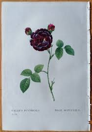 |
| Meisterdrucke | German School • Buy exclusive fine art prints online | 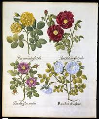 |
| Amazon.com | Amazon.com: Rosa de Provins - Rosa Gallica Maheka Flore Subsimplici : Hogar y Cocina | 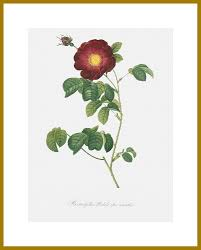 |
| Album Online | Van Eeden's rose with dark purple and crimson flowers. - Album alb1944969 | 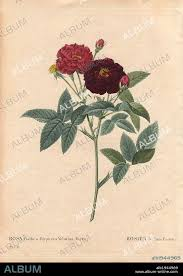 |
| Wikipedia | ملف:Stamp of Ajman - 1969 - Colnect 674336 - Eglantier.jpeg - ويكيبيديا | 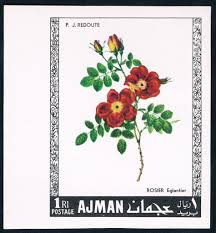 |
| Allposters | Rosa Centifolia Pluto Giclee Print - The Vintage Collection | AllPosters.com | 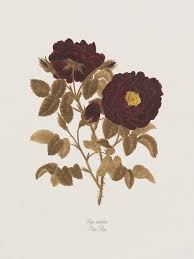 |
| eBay | 1990 Vintage Print Rose Flower Rosa Gallica Maheka Floral Decor Roses | eBay | 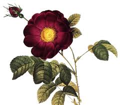 |
| Amazon.com | Amazon.com: Rosa de Provins - Rosa Gallica Maheka Flore Subsimplici : Hogar y Cocina | 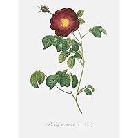 |
| seasons.agency | Close-up of golden moss rose with leaves … – Buy image – 10234278 ❘ seasons.agency | 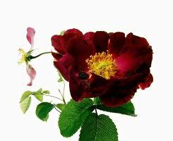 |
| Bridgeman Images | Image of Sweet briar or eglantine rose, Rosa rubiginosa | 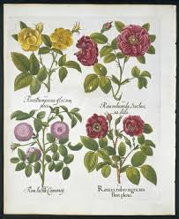 |
| PX Canvas Prints | Vintage Botanical Red Wild Rose Illustration Canvas Print by Erzebet S - PX Canvas Prints | 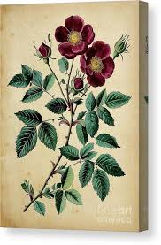 |
| Alamy | Herbier géneral de l'amateur, Paris, Audot, Libraire, 1816-1827, Pink flower, 19th century, Floriculture, France, Icônes, Pictorial works, Plants ornamental, Botany, Plants, Drawings, Flowers, The artwork features a detailed botanical illustration of the ' | 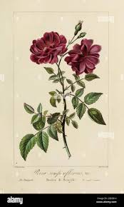 |
| Fine Vintage Art | Rose. Rosa Gallica Maheka. Fine art print. | 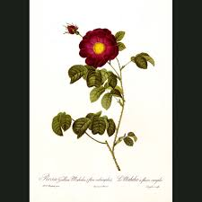 |
| Joel Oppenheimer Gallery | Redouté Roses Pl. 153, French Rose "Violacea" | Les Roses - Antique Originals | 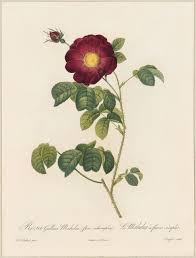 |
| Etsy | VINTAGE ROSE FRENCH Print,vintage Rose Illustration Picture Art,vintage Rose Illustraion Wall Decor,vintage Rose French Decor,rose French - Etsy UK | 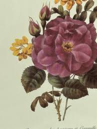 |
| Wellcome Collection | Rose flowers (5 varieties). Coloured engraving by H. Fletcher, c. 1730, after J. van Huysum. | Wellcome Collection | 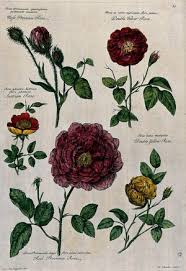 |
| Alamy | Photo of a postage stamp from Ajman United Arab Emirates with an image of roses 1969 Stock Photo - Alamy | 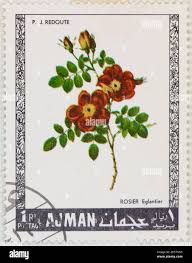 |
| 24 Free Printables ideas to save today | prints, botanical prints, botanical illustration and more | 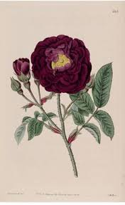 | |
| Photos.com | Roses 1613 #3 by Heritage Images | 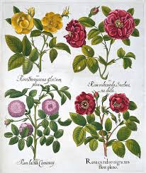 |
| X | Tom Willett (@tomwillett84) / Posts / X | 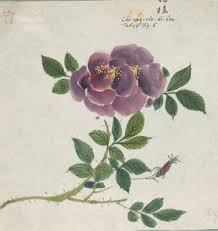 |
| rosegathering.com | Violacea: Gallica Rose | 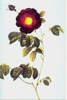 |
| Rosa Rugosa Drawing | 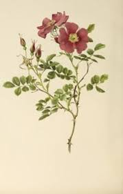 | |
| .:: GEOCITIES.ws ::. | Redoute' Roses (Main Page) | |
| Alamy | Moss Rose of La Flèche, Rosa Muscosa Anemoneflora Stock Photo - Alamy | |
| Etsy | Series of Cut Aways Showing the Anatonmy of A Dog Rose - Etsy | |
| Mercari | BEAUTIFUL ROSES 50 PLATES IN FULL COLOR P | Mercari | |
| Alamy | Wilde roos hi-res stock photography and images - Alamy | |
| heritage-print.com | Mary Lawrence's Dark China Rose Print, 1799. Art Prints, Posters & Puzzles from Heritage Images | |
| Kernow Furniture | Pair Antique Floral French Prints – Kernow Furniture | |
| scottandlara.com | Photos of the roses I have pressed – Rose Adventures | |
| Shutterstock | Red Vinegar Rose Rosa Gallica Hand-coloured Stock Illustration 2730518151 | Shutterstock |
{kind=link}